Crystal Goblet
"The Crystal Goblet" is an essay on typography by Beatrice Warde. The essay was first delivered as a speech, called "Printing Should Be Invisible," given to the British Typographers' Guild at the St Bride Institute in London, on October 7, 1930.[4] [5] Like many of Warde's other writings, the essay was written with the intent to be spoken before printed, as she carefully considered the invocations of voice, presence, and personal connection while reading aloud.
The essay is notable historically as a call for increased clarity in printing and typography. It is now significant as a common reading in the study of typography and graphic design. The essay has been reprinted many times and is a touchstone for the concept of "clear" typography and the straightforward presentation of content.
Days after her 1930 address, the lecture appeared in a newsletter called the British & Colonial Printer & Stationer. It was printed again as a pamphlet in 1932 and 1937. Thenceforward, it appeared as either "The Crystal Goblet" or "The Crystal Goblet, or Printing Should Be Invisible." In 1955 it was published again and reached its widest audience yet in a book called The Crystal Goblet: Sixteen Essays on Typography.
Warde poses a choice between two wine glasses: one of "solid gold, wrought in the most exquisite patterns" and one of "crystal-clear glass."

Crystal Goblet
·Warde, Beatrice (1926). "The 'Garamond' Types". The Fleuron: 131–179.
·"Jannon". French Ministry of Culture.
·De Bondt, Sara. "Beatrice Warde: Manners and type". Eye Magazine. Retrieved 3 December 2015.
·Jacob, H. ed., Beatrice Warde, The Crystal Goblet: Sixteen Essays on Typography, Sylvan Press, London, 1955.
·McVarish, Emily, "'The Crystal Goblet': The Underpinnings of Typographic Convention," Design and Culture, 2:3, 285-307